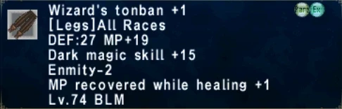

Level 75 reference · Zenith rules


Image source
StatisticsWizard's Tonban +1 |
Other UsesNPC Sell Price: Cannot be sold to NPCs. |
How to Obtain
Quest
Obtained by trading the following items to Sagheera in Port Jeuno:
Adapted from Eden Wiki: Wizard's Tonban Plus 1 · Contributors and history · CC BY-SA 4.0. Revision 21418. Layout, links and optional background text adapted for Zenith.